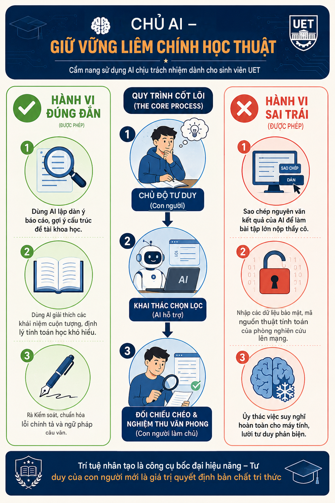

Kỷ Luật Số &
Liêm Chính Học Thuật
Nghiên cứu chính sách học thuật tại UET và định hình bộ nguyên tắc cá nhân trong việc ứng dụng Trí tuệ nhân tạo tạo sinh (Generative AI) vào nghiên cứu Cơ điện tử.
KHUNG ĐẠO ĐỨC P.R.I.M.E.S
Bộ 6 nguyên tắc cá nhân được tôi xây dựng nhằm chống lại "Ảo giác về năng lực" (Illusion of competence) khi làm việc với máy móc.
Tư duy độc lập đi trước
Luôn tự lập dàn ý, viết mã nháp (pseudocode) hoặc phân tích cấu trúc bài toán trước khi tìm đến sự trợ giúp của AI. Không bao giờ coi AI là điểm xuất phát của luồng tư duy.
Kiểm chứng chéo tối thượng
Mọi công thức, định lý hay mã nguồn AI xuất ra chỉ được xem là "giả thuyết". Bắt buộc đối chiếu lại với giáo trình, sách chuyên khảo hoặc tài liệu nghiên cứu chính thống.
Minh bạch học thuật
Khai báo trung thực việc sử dụng AI (qua In-text Citation và định dạng APA). Sẵn sàng cung cấp nhật ký Prompt để chứng minh bản thân là "kiến trúc sư", không phải "thợ copy".
Bảo mật thông tin dữ liệu
Tuyệt đối không đẩy các dữ liệu nhạy cảm (mã số sinh viên, tài khoản hệ thống) hay mã nguồn lõi (core source code) của các dự án tại phòng Lab UET lên các mô hình AI công cộng.
Học tập tiến hóa
Thay vì chỉ xin kết quả cuối cùng, hãy dùng AI để đào sâu bản chất bằng các câu hỏi: "Tại sao thuật toán này lại tối ưu hơn?", "Nguyên lý vật lý đằng sau là gì?".
Giữ vững năng lực cốt lõi
Luôn duy trì khả năng tự giải quyết các bài toán nền tảng (toán cao cấp, lý thuyết mạch) bằng giấy bút. Không để máy móc làm thui chột khả năng tư duy phản biện tự nhiên của kỹ sư.
⚖️ THỰC CHỨNG & CẨM NANG HÀNH ĐỘNG
📄 Xem Báo Cáo Nghiên Cứu (PDF)Case Study: Rủi ro "Ảo giác kiến thức"
Trong quá trình thực nghiệm môn Giải tích 1 (ôn tập Đạo hàm & Vi phân), tôi đã phát hiện ra lỗ hổng chết người của việc "sao chép mù quáng". Dù AI có thể tính toán công thức rất nhanh, nhưng nó đã bỏ sót hoàn toàn điều kiện cần để hàm số khả vi (mối quan hệ giữa tính liên tục và khả vi).
Nếu một sinh viên lười tư duy, copy nguyên văn kết quả này đem nộp, bài làm sẽ mất điểm ở phần tư duy nền tảng. Điều này chứng minh quy tắc "Rigorous Checking" trong khung P.R.I.M.E.S là bắt buộc: Người dùng phải tự mình tái cấu trúc, đối chiếu giáo trình và bổ sung định nghĩa thì mới tạo ra được một văn bản học thuật chuẩn mực.
Nghiêm cấm tuyệt đối hành vi sao chép nguyên mẫu (raw copy-paste) dữ liệu AI. Sinh viên phải luôn sẵn sàng bảo vệ trực tiếp (vấn đáp) để chứng minh luồng tư duy gốc của chính mình.
Cẩm Nang Sinh Viên: DOs & DON'Ts
